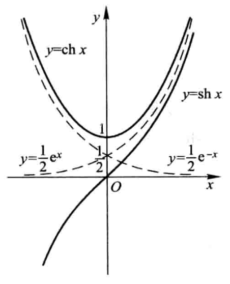
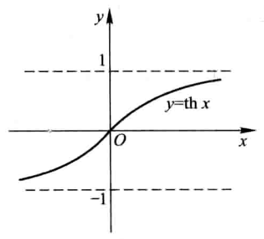

映射与函数
映射的定义
没有找到对应的渲染器 file-annotation-ref 映射与函数
设、是两个非空集合，如果存在一个法则,使得对 中每个元素,按法则,在中有唯一确定的元素 与之对应，那么称为从 到的映射，记作
,
其中称为元素(在映射下)的像，并记作,即
,
而元素称为元素(在映射下)的一个原像；集合称为映射的定义域，记作,即; 中所有元素的像所组成的集合称为映射的值域，记作或,即
满射、单射、双射
没有找到对应的渲染器 file-annotation-ref 映射与函数
算子、泛函、变换、函数
没有找到对应的渲染器 file-annotation-ref 映射与函数
映射又称为算子. 根据集合、的不同情形，在不同的数学分支中，映射又有不同的惯用名称. 例如，从非空集到数集的映射又称为上的泛函，从非空集到它自身的映射又称为上的变换，从实数集(或其子集) 到实数集的映射通常称为定义在上的函数。
逆映射的定义
没有找到对应的渲染器 file-annotation-ref 映射与函数
设是到的单射，则由定义，对每个 ,有唯一的 ,适合 . 于是，我们可定义一个从 到 的新映射, 即
对每个,规定, 这 满足. 这个映射 称为 的逆映射，记作,
其定义域 ,值域
复合映射的定义
没有找到对应的渲染器 file-annotation-ref 映射与函数
设有两个映射
其中, 则由映射 和可以定出一个从到 的对应法则，它将每个 映成. 显然，这个对应法则确定了一个从 到 的映射，这个映射称为映射 和 构成的复合映射，记作 ,即
, , .
函数的定义
没有找到对应的渲染器 file-annotation-ref 映射与函数
设数集 , 则称映射 为定义在 上的函数，通常简记为
,
其中称为自变量， 称为因变量， 称为定义域，记作 ,即
函数的定义中，对每个, 按对应法则, 总有唯一确定的值 与之对应， 这个值称为函数 在 处的函数值，记作, 即 . 因变量 与自变量 之间的这种依赖关系，通常称为函数关系. 函数值的全体所构成的集合称为函数的值域，记作或,即
.

函数的有界性
没有找到对应的渲染器 file-annotation-ref 映射与函数
设函数的定义域为, 数集. 如果存在数 ,使得
对任一 都成立，那么称函数在上有上界，而称为函数在上的一个上界. 如果存在数,使得 对任一都成立，那么称函数在上有下界，而称为函数在上的一个下界. 如果存在正数,使得 对任一 都成立，那么称函数在上有界. 如果这样的不存在，就称函数在上无界；这就是说，如果对于任何正数, 总存在 , 使, 那么函数在上无界.
对任一 都成立，那么称函数在上有上界，而称为函数在上的一个上界. 如果存在数,使得 对任一都成立，那么称函数在上有下界，而称为函数在上的一个下界. 如果存在正数,使得 对任一 都成立，那么称函数在上有界. 如果这样的不存在，就称函数在上无界；这就是说，如果对于任何正数, 总存在 , 使, 那么函数在上无界.
函数的单调性
没有找到对应的渲染器 file-annotation-ref 映射与函数
设函数的定义域为, 区间 . 如果对于区间 上任意两点及, 当时，恒有
,
那么称函数在区间 上是单调增加的; 如果对于区间 上任意两点及, 当时，恒有
, 那么称函数在区间 上是单调减少的. 单调增加和单调减少的函数统称为单调函数.
函数的奇偶性
没有找到对应的渲染器 file-annotation-ref 映射与函数
函数的周期性
没有找到对应的渲染器 file-annotation-ref 映射与函数
狄利克雷(Dirichlet)函数
没有找到对应的渲染器 file-annotation-ref 映射与函数
容易验证这是一个周期函数，任何正有理数 都是它的周期。因为不存在最小的正有理数，所以它没有最小正周期
基本初等函数
没有找到对应的渲染器 file-annotation-ref 映射与函数
幂函数： ( 是常数),
指数函数 : (且 ),
对数函数： (且,特别当时，记为),
三角函数：如等，
反三角函数：如, , 等。
以上这五类函数统称为基本初等函数.
双曲函数
没有找到对应的渲染器 file-annotation-ref 映射与函数
双曲正弦 ，
双曲余弦
双曲正切

